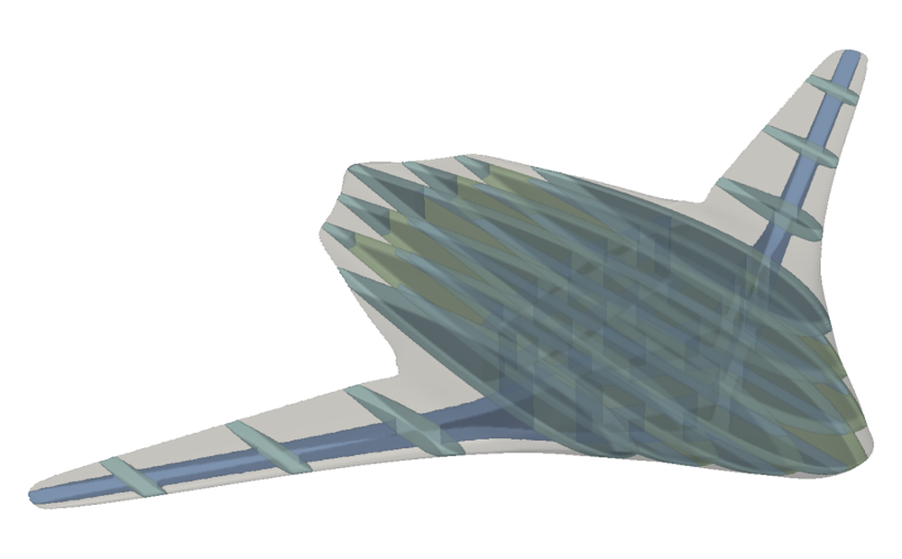
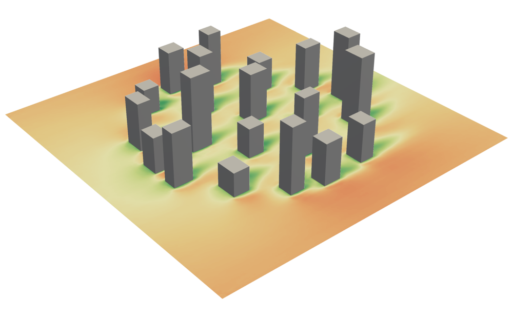
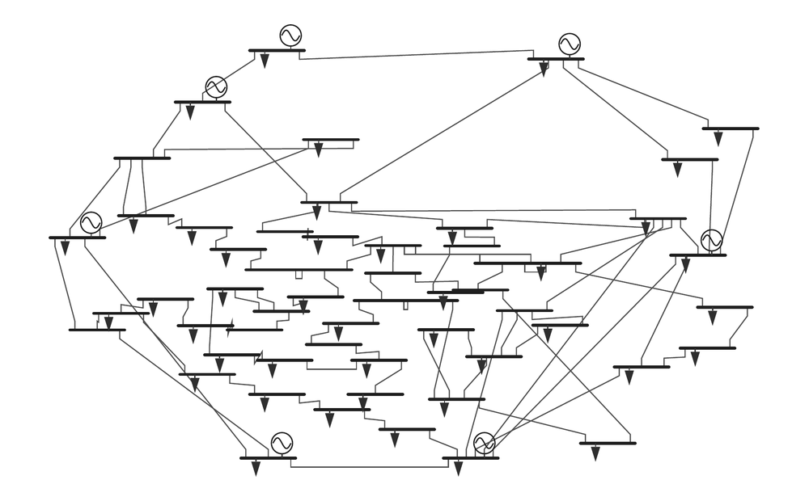
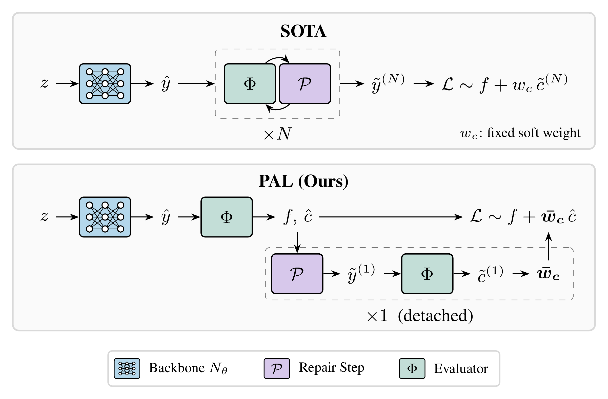
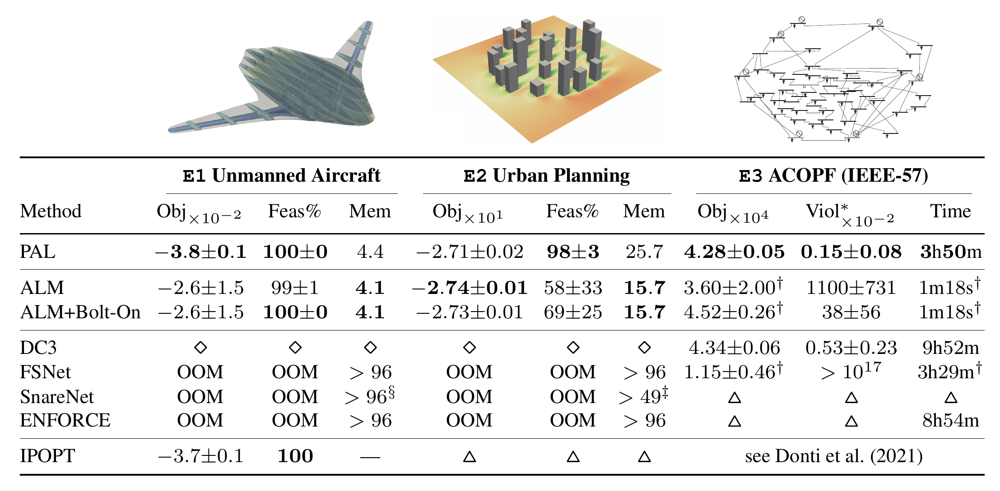
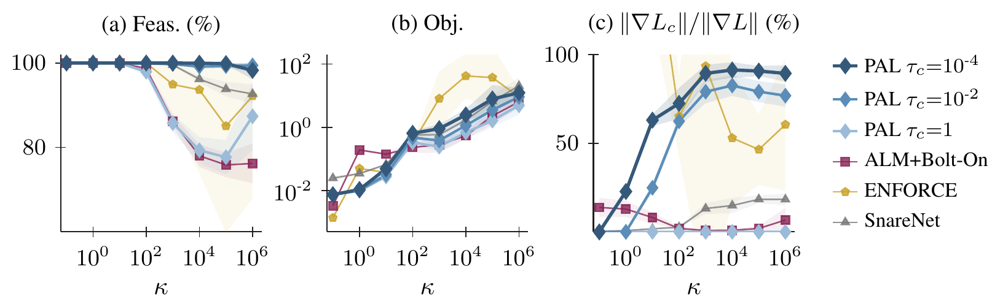

Only Project Once: Projection-Adaptive Loss for Exact Constraint Satisfaction
ETH Zurich



In training, a single detached projection step is enough for exact constraint satisfaction.
Abstract
Precise constraint satisfaction is a prerequisite to deploying learned models in many areas, motivating methods that repair raw neural predictions with a repair procedure. Current methods unroll multiple repair steps in training and softly penalize constraint violations that remain after the unroll. This is compute- and memory-intensive, lacks robustness when the repair fails to converge, and surrenders most of the constraint satisfaction work to the repair. Our central finding is that, contrary to common practice, a single detached projection step suffices in training. We accomplish this with a Projection-Adaptive Loss (PAL), which uses the constraint residual after this single step to adaptively weigh constraint penalties on the raw prediction. In experiments, PAL is the only method that retains virtually perfect feasibility on extremely nonlinear constraints, and matches or outperforms current methods on synthetic and engineering benchmarks. Because it only requires a single detached projection step, PAL trains 2.5× faster than the canonical repair-based method (DC3) on its own ACOPF benchmark. PAL can also be trained when constraints are expensive to evaluate (e.g., via neural surrogates), a setting where current unrolled methods are memory-intractable.
Method
The predominant approach to training repair-based methods is to unroll multiple repair steps per training iteration. Any residual violation at the end of the unroll is then softly penalized in the loss with a fixed weight. We show that, contrary to the prevailing wisdom, only a single detached projection step suffices in training. Our Projection-Adaptive Loss (PAL) uses the constraint residual after this single step to adaptively weigh constraint penalties on the raw prediction. This shifts the feasibility load to the neural network and treats the projection as a final clean-up.

Results
We evaluate PAL on three engineering case studies. E1 optimizes aircraft designs using an expensive neural geometry representation with surrogates for structural properties and aerodynamics. E2 (urban planning) uses a video-diffusion model to evaluate pedestrian wind comfort in cities. E3 is a variant of the ACOPF benchmark that motivated DC3, with 576 constraints. On E1 and E2, the unrolled-repair baselines are out of memory even at a mini-batch size of 1 (SnareNet on E1 at a mini-batch size of 8), while PAL trains with mini-batches of 32 on E1 and 16 on E2. On E3, DC3’s flagship benchmark, PAL leads in both feasibility and optimality while training 2.5× faster.

On a synthetic problem with tunable constraint curvature κ, PAL reaches optimality on par with the full-unroll methods and retains the highest feasibility of all methods at an extreme curvature of κ = 106. Its adaptive weight update applies increasing pressure to reduce pre-projection constraint violations when the first projection step leaves large residuals.

Cite
Aebersold, T., Massoudi, S., and Fuge, M. D. (2026). Only Project Once: Projection-Adaptive Loss for Exact Constraint Satisfaction. arXiv:XXXX.XXXXX.